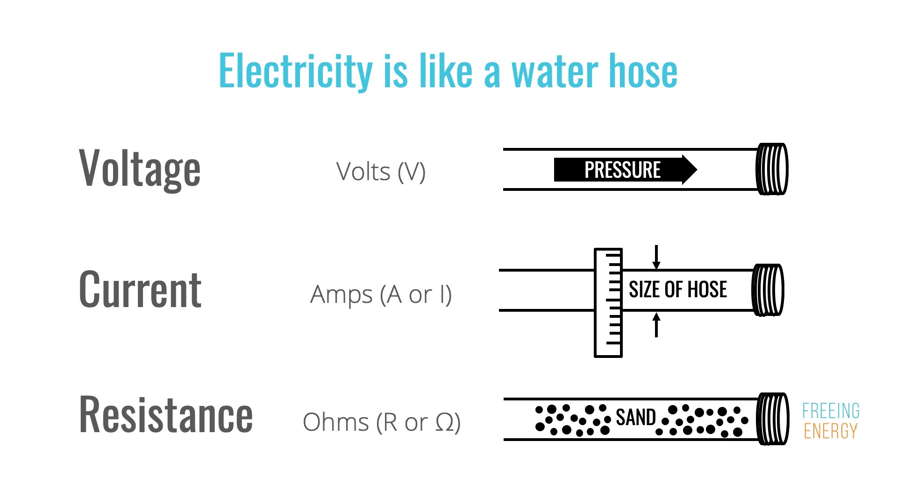
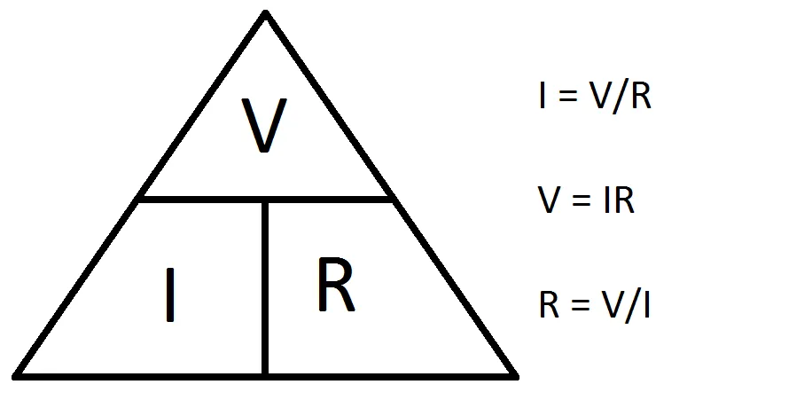
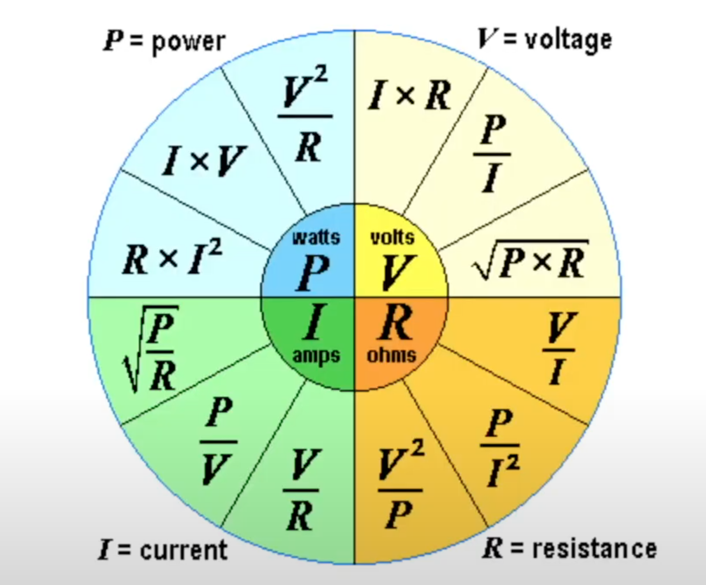
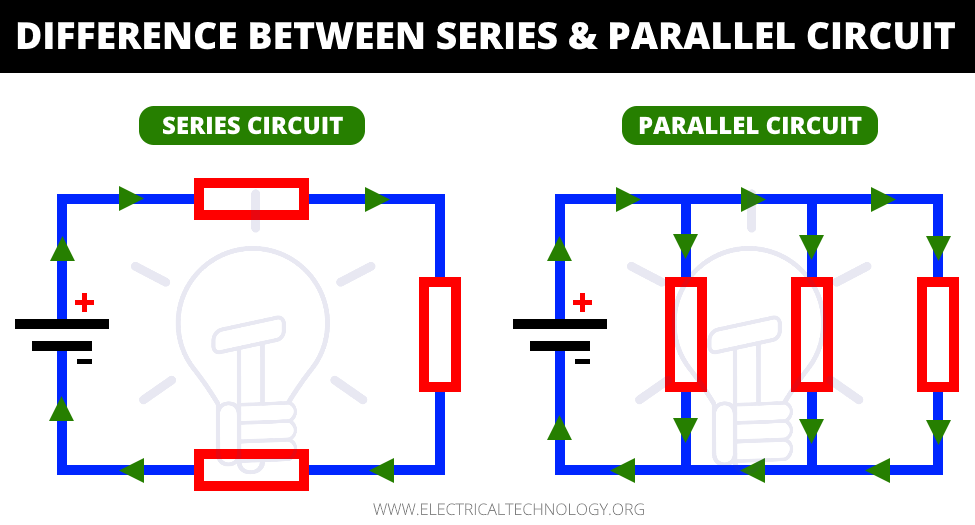

HOME
Week 10: Electronics 1
Introduction to electronics.

This week we watched a video explaining important terms and concepts to the field of electronics with an additional graded worksheet to finish after the video. Quite early in the video, we are introduced to an important form of measurement in the international system of units. The importance of this system allows for the prevention of issues in measurement with unchanging universal measurements that can allow anyone to understand what is measured. There are many units of measurement in this system but we found there to be 7 majors units: The meter, kilogram, seconds, amperes, kelvin, mole, and candela. The properties of each can be found below: 

The most important piece of the SI units in terms of this week's assignment would be the ampere as it is an electric current that we will be working with. The three important units that we will be using for electricity would be amperage, resistance, and voltage. Amperage represents the strength an electric current may have, Resistance is the opposite of amperage it represents the forces opposing the electric flow. Voltage finally represents the pressure that causes electricity to flow. Attached below is a simple chart used to depict what each measurement does.  
After understanding the role of the 3 units we can understand how they interact with each other utilizing Ohm's Law. Ohm's law can be easily explained through the three formulas V=I x R, I = V / R, and R= V / I. 
additionally, to ohms law, we learn about power. Power derives itself from Watt but is used to represent the amount of energy spent over time. Much like with Ohm's law we found out how these units relate to each other. 
Eventually, we move onto circuits where we will eventually apply our knowledge to complete the worksheet. A closed-circuit allows for the free and continuous flow of electricity through a path. when a circuit is opened the path isn't fully connected so there is no flow. Resistors are used within a circuit to regulate overall flow. Importantly in circuits, we have two terms to describe the position of resistors one a circuit: Parallel and Series. 
Link to the problem set answers: here